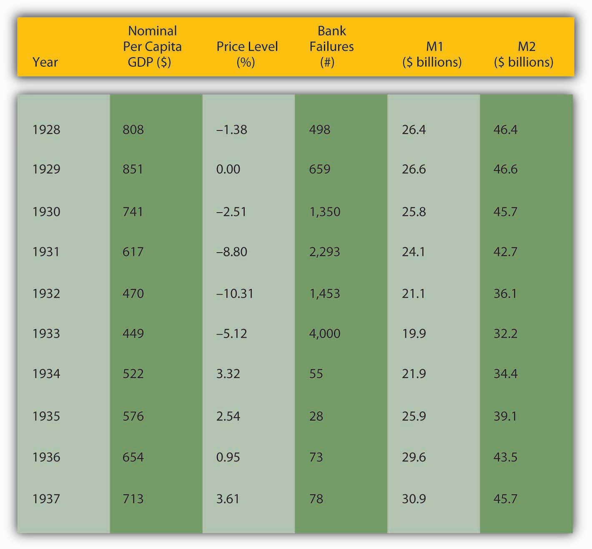

Time again, government regulators have either failed to stop financial crises or have exacerbated them. Examples are too numerous to discuss in detail here, so we will address only two of the more egregious cases, the Great Depression of the 1930s and the Savings and Loan (S&L) Crisis of the 1980s.
Generally when economic matters go FUBAR (Fouled Up Beyond All Recognition in polite circles), observers blame either “market failures” like asymmetric information and externalitiesCosts or benefits of an economic activity that are not included in the price, that are not internalized by the buyer and/or seller. Negative externalities, like pollution, impose costs on society; positive externalities, like education, provide societal benefits., or they blame the government. Reality is rarely that simple. Most major economic foul-ups stem from a combination of market and government failures, what I like to call hybrid failures. So while it would be an exaggeration to claim that government policies were the only causes of the Great Depression or the Savings and Loan Crisis, it is fair to say that they made matters worse, much worse.
The stock market crash of 1929 did not start the Great Depression, but it did give the economy a strong push downhill.stocks.fundamentalfinance.com/stock-market-crash-of-1929.php A precipitous decline in stock prices like that of 1929 can cause uncertainty to increase and balance sheets to deteriorate, worsening asymmetric information problems and leading to a decline in economic activity. That, in turn, can cause bank panics, further increases in asymmetric information, and yet further declines in economic activity followed by an unanticipated decline in the price level. As Figure 11.2 "Major macro variables during the Great Depression" shows, that is precisely what happened during the Great Depression—per capita gross domestic product (GDP) shrank, the number of bankruptcies soared, M1 and M2 (measures of the money supply) declined, and so did the price level.
Figure 11.2 Major macro variables during the Great Depression
Weren’t evil financiers completely responsible for this mess, as nine out of ten people thought at the time? Absolutely not. For starters, very few financiers benefited from the depression and they did not have the ability to cause such a mess. Most would have stopped the downward spiral if it was in their power to do so, as J. P. Morgan did when panic seized the financial system in 1907.www.bos.frb.org/about/pubs/panicof1.pdf In fact, only the government had the resources and institutions to stop the Great Depression and it failed to do so. Mistake number one occurred during the 1920s, when the government allowed stock and real estate prices to rise to dizzying heights. (The Dow Jones Industrial Average started the decade at 108.76, dropped to around 60, then began a slow climb to 200 by the end of 1927. It hit 300 by the end of 1928 and 350 by August 1929.)measuringworth.com/datasets/DJA By slowly raising interest rates beginning in, say, mid-1928, the Federal Reserve (Fed) could have deflated the stock market bubbleOccurs when the price of an asset rises significantly above its rational range, with its price based on fundamentals like interest rates, profitability, and so forth. before it grew to enormous proportions and burst in 1929.
Mistake number two occurred after the crash, in late 1929 and 1930, when the Federal Reserve raised interest rates. A much better policy response at that point would have been to lower interest rates in order to help troubled banks and stimulate business investment and hence private job growth. In addition, the Federal Reserve did not behave like a lender of last resort (LLR)A clearinghouse, central bank, or government that lends during crises, usually by following some variant of Bagehot’s Rule/Hamilton’s Rule. during the crisis and follow Bagehot’s/Hamilton’s RuleA policy, described first by Alexander Hamilton and later by Walter Bagehot, in which, during a crisis, a lender of last resort lends freely at a penalty rate to all borrowers who can post sufficient collateral.. Before the Fed began operations in the fall of 1914, regional clearinghousesSupport institutions that help banks to clear sums due to each other arising from checks, notes, loans, and other banking activities. Prior to 1914, clearinghouses also acted as lenders of last resort during panics. had acted as LLRs, but during the Depression they assumed, wrongly as it turned out, that the Fed had relieved them of that responsibility. They were, accordingly, unprepared to thwart major bank runs.Michael Bordo and David Wheelock, “The Promise and Performance of the Federal Reserve as Lender of Last Resort,” Norges Bank Working Paper 201 (20 January 2011). papers.ssrn.com/sol3/papers.cfm?abstract_id=1847472
The government’s third mistake was its banking policy. The United States was home to tens of thousands of tiny unit banks that simply were not large or diversified enough to ride out the depression. If a factory or other major employer succumbed, the local bank too was doomed. Depositors understood this, so at the first sign of trouble they ran on their banks, pulling out their deposits before they went under. Their actions guaranteed that their banks would indeed fail. Meanwhile, across the border in Canada, which was home to a few large and highly diversified banks, few bank disturbances took place. California also weathered the Great Depression relatively well, in part because its banks, which freely branched throughout the large state, enjoyed relatively well-diversified assets and hence avoided the worst of the bank crises.
The government’s fourth failure was to raise tariffs in a misguided attempt to “beggar thy neighbor.”www.state.gov/r/pa/ho/time/id/17606.htm Detailed analysis of this failure, which falls outside the bailiwick of finance, I’ll leave to your international economics textbook and a case elsewhere in this book. Here, we’ll just paraphrase Mr. Mackey from South Park: “Tariffs are bad, mmmkay?”en.wikipedia.org/wiki/List_of_staff_at_South_Park_Elementary#Mr._Mackey
But what about Franklin Delano Roosevelt (FDR)www.whitehouse.gov/history/presidents/fr32.html and his New Deal?newdeal.feri.org Didn’t the new administration stop the Great Depression, particularly via deposit insurance, Glass-Steagall, securities market reforms, and reassuring speeches about having nothing to fear but fear itself?historymatters.gmu.edu/d/5057 The United States did suffer its most acute banking crisis in March 1933, just as FDR took office on March 4.www.bartleby.com/124/pres49.html (The Twentieth Amendment, ratified in 1938, changed the presidential inauguration date to January 20, which it is to this day.) But many suspect that FDR himself brought the crisis on by increasing uncertainty about the new administration’s policy path. Whatever the cause of the crisis, it shattered confidence in the banking system. FDR’s creation of a deposit insurance scheme under the aegis of a new federal agency, the Federal Deposit Insurance Corporation (FDIC), did restore confidence, inducing people to stop running on the banks and thereby stopping the economy’s death spiral. Since then, bank runs have been rare occurrences directed at specific shaky banks and not system-wide disturbances as during the Great Depression and earlier banking crises.
But as with everything in life, deposit insurance is far from cost-free. In fact, the latest research suggests it is a wash. Deposit insurance does prevent bank runs because depositors know the insurance fund will repay them if their bank goes belly up. (Today, it insures $250,000 per depositor per insured bank. For details, browse http://www.fdic.gov/deposit/deposits/insured/basics.html) However, insurance also reduces depositor monitoring, which allows bankers to take on added risk. In the nineteenth century, depositors disciplined banks that took on too much risk by withdrawing their deposits. As we’ve seen, that decreases the size of the bank and reduces reserves, forcing bankers to decrease their risk profile. With deposit insurance, depositors (quite rationally) blithely ignore the adverse selection problem and shift their funds to wherever they will fetch the most interest. They don’t ask how Shaky Bank is able to pay 15 percent for six-month certificates of deposit (CDs) when other banks pay only 5 percent. Who cares, they reason, my deposits are insured! Indeed, but as we’ll learn below, taxpayers insure the insurer.
Another New Deal financial reform, Glass-Steagall, in no way helped the U.S. economy or financial system and may have hurt both. For over half a century, Glass-Steagall prevented U.S. banks from simultaneously engaging in commercial (taking deposits and making loans) and investment banking (underwriting securities and advising on mergers) activities. Only two groups clearly gained from the legislation, politicians who could thump their chests on the campaign stump and claim to have saved the country from greedy financiers and, ironically enough, big investment banks. The latter, it turns out, wrote the act and did so in such a way that it protected their oligopoly from the competition of commercial banks and smaller, more retail-oriented investment banks. The act was clearly unnecessary from an economic standpoint because most countries had no such legislation and suffered no ill effects because of its absence. (The Dodd-Frank Act’s Volcker Rule represents a better approach because it outlaws various dubious practices, like proprietary trading, not valid organizational forms).
The Security and Exchange Commission’s (SEC) genesis is almost as tawdry and its record almost as bad. The SEC’s stated goal, to increase the transparency of America’s financial markets, was a laudable one. Unfortunately, the SEC simply does not do its job very well. As the late, great, free-market proponent Milton Friedman put it:
“You are not free to raise funds on the capital marketsThis part is inaccurate. Financiers went loophole mining and found a real doozy called a private placement. As opposed to a public offering, in a private placement securities issuers can avoid SEC disclosure requirements by selling directly to institutional investors like life insurance companies and other “accredited investors” (legalese for “rich people”). unless you fill out the numerous pages of forms the SEC requires and unless you satisfy the SEC that the prospectus you propose to issue presents such a bleak picture of your prospects that no investor in his right mind would invest in your project if he took the prospectus literally.This part is all too true. Check out the prospectus of Internet giant Google at www.sec.gov/Archives/edgar/data/1288776/000119312504142742/ds1a.htm. If you don’t dig Google, check out any company you like via Edgar, the SEC’s filing database, at www.sec.gov/edgar.shtml. And getting SEC approval may cost upwards of $100,000—which certainly discourages the small firms our government professes to help.”
As noted above, the FDIC insures bank deposits up to $250,000 per depositor per insured bank. What if an investor wants to deposit $1 million or $1 billion? Must the investor put most of her money at risk?
Depositors can loophole mine as well as anyone. And they did, or, to be more precise, intermediaries known as deposit brokers did. Deposit brokers chopped up big deposits into insured-sized chunks, then spread them all over creation. The telecommunications revolution made this relatively easy and cheap to do, and the S&L crisis created many a zombie bank willing to pay high interest for deposits.